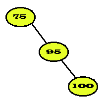
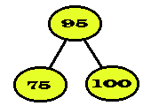

|
|
A. Purpose of the Tree Data Structure
B. Basic Terminology
C. Binary Search Trees
D. Balanced Binary Search Trees (AVL-Trees)
In computing we build trees often because they are useful data structures in evaluating expressions, in sorting, in searching, in problems that require backtracking (backing up when we have hit a dead end) as well as other areas of computing. Tree data structures are used to represent hierarchical relationships such as parent-child relationships and boss-worker relationships, for example. There are many different types of trees including: binary trees, AVL trees, trie trees, B-trees, and general trees. We will focus primarily on binary trees.
In order to comprehend the usefulness of trees, it is first important to build a basic "tree" vocabulary as pertaining to computer science. Let's examine the following definitions:
For example:
a) Answer the following as related to Tree1. b) Answer the following as related to Tree2. Height = ________________________ Height = ____________________ Root Node = _____________________ Root node = _________________ Children of R = _________________ Degree of node D = __________ Parent of K = ___________________ Level of node E = ___________ c) Fill in blanks. Which trees are binary trees? __________________________________ннн___ Which trees are full binary trees? ________________________________ Which trees are binary search trees? ______________________________ Which trees are complete? _________________________________________
Note that if T is a full binary tree of height n, then T must have:
20 nodes at level 1
21 nodes at level 2
.....
2n-1 nodes at level n
a) A full binary tree of height = 1 will have 20 = ____ node/s. b) A full binary tree of height = 2 will have 21 + 20 = ____ nodes. c) A full binary tree of height = 3 will have 22 + 21 + 20 = ____ nodes. d) A full binary tree of height = 4 will have _______nodes. e) A full binary tree of height = 5 will have _______nodes. f) A full binary tree of height = k will have _______nodes. g) How many leaves are there in a full binary tree of height 5? _______________ h) How many leaves are there in a full binary tree of height k?________________
A binary search tree (BST) provides convenient sorting and searching capabilities in a binary tree. Binary search trees provide the linked list equivalent of the binary search of a sorted array. Consider the following BST:
Assume you want to search for x = 77. Since x is less than 85 (the root), x must lie in the left subtree of the root, if it exists in the tree. Essentially we have split the search space of the above tree in half just as we do when using the binary search for a sorted array. The largest number of comparisons (of the form "Is x equal the data in this node?") required will equal the height of the tree.
Assume you have a full BST with height k. It has 2k - 1 nodes (or data values) and since its height is k, a search requires k comparisons in the worst case. Note that k is approximately equal to log2 ( 2k - 1) . In other words, the number of comparisons in a full binary tree is approximately equal to the logarithm (base 2) of the number of nodes in the tree . This relationship is true in general. If a BST is relatively "balanced" (i.e., not badly skewed) and has n nodes then a search will require roughly log2 n comparisons in the worst case.
The height of a tree is critical in determining how efficiently we can search the tree for a given element. All 3 trees below have 7 nodes. Let n be the total number of nodes in a tree.
To give some empirical data regarding the height of BSTs, you should examine a client of the BSTClass that we have written which builds a BST containing 10 random integer nodes. Suppose the code were changed so that it generated a BST with 255 nodes. Note that 255 = 28 - 1; so if the tree is complete, it would have height 8. In fact, it cannot have height less than 8, but it can have a height as great as 255. UGH!
a) a table displaying the height of each of the 30 trees with 255 nodes
b) the average height of the 30 BSTs with 255 nodes
c) the smallest height among the 30 trees
d) the largest height among the 30 trees
Compile your program by typing:aCC inlab14.o main14.cc -o treelabRun your program and submit a script session showing the modified code, the compile and a run.
Obviously search time is reduced (as is insertion and deletion time) if the BST is nearly balanced. Unless the tree has exactly 2n - 1 nodes (for some n), it cannot be perfectly balanced (or full). So "off-by-one" is generally the best we can hope for in balancing. That is, we will usually have the height of one subtree being greater than the height of the other subtree by 1. The question is, "Can we build a BST so the balance is at most off-by-one?" Note that the following tree is off-by-two.
The height of the left subtree is 0 (by definition an empty tree has height 0) and the height of the right subtree is 2. It can be rearranged by choosing a different root so it is balanced as follows: 
It is still a binary search tree. Adelson-Velsky and Landis proved that a BST can be constructed so that it is nearly height balanced (i.e., at worst off-by-one) and, more importantly, there is an efficient algorithm to construct such a tree. That is, the time complexity (efficiency) of the additional cost to guarantee (nearly) balanced trees is not unreasonable. In honor of their work such trees are called AVL-trees.
Formally, a BST is an AVL-tree if the height of the left and
right subtree of each node in the tree differ by at most 1. Here
is an example of two trees one of which is an AVL-tree and the other is
not.
It may not be so clear as to how we could rearrange (b) into an AVL-tree. Essentially, in the terminology of Adelson-Velsky and Landis, it takes a "left rotation about 55" followed by a "right rotation about 75." The tree in (b) is pictured below after a left rotation about 55.
A subsequent right rotation at 75 will change (c) into (a).
a) Of the trees rooted at these four nodes, which one(s) is(are)
not exactly balanced? ___________
b) Which non-balanced node on this path is "closest" to where the 60
was inserted? _______________
c) On which side (left or right) of 75 did the 60 go? ___________After the insertion, the subtree rooted at 75 is not an AVL-tree, correct? This explains the "right rotation at 75." The "left rotation at 55" is more dificult to motivate. It is required because the new node 60 was inserted in the right subtree of the left subtree of 75. Had we inserted a 45 instead of 60, only the "right rotation at 75" would have been required.